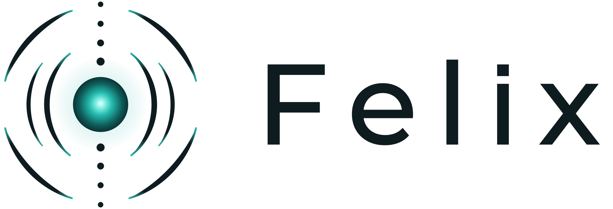

The same AI model can vibe-code a demo or engineer a product. Felix makes it do the second.
One typed instruction now becomes about 200 model turns and nearly 300 tool calls. No person reads that, so whatever decides the work is done has to be something other than the agent that did it.
I hand coding agents as much of my work as they'll take: more than 87,100 model turns over 73 active days. The more I gave them, the more often one told me a job was done when nothing had shown it was.
I could have given them less. I built the thing that checks them instead, and the agents wrote most of Felix under its own rules.
If I get in, I take a leave from Berkeley for spring 2027 and build this full time in San Francisco.
The question I keep working onIs the AI actually doing what it says it's doing?
BehaviorChangeBenchI lead this Google DeepMind and UCSF TECH Lab project: can a frontier model really help someone change a habit over many conversations?
ElenchusUsed by more than 200 Berkeley students. When a blind test showed my own core technique did no better than a plain baseline, I cut it.
Agent vendors check agents with more AI, a model grading a model. Felix keeps the AI free and makes the boundaries deterministic.
In 43 of my sessions, August 10 to September 21, 2026, an agent tried to stop and call its work done without a current pass on the code it was handing over.
About 130 rerunsonce sent back, and at least 15 of those runs failed. That's work that would otherwise have been called done.
31% of my turnswere marked by readers, in a September pilot, as me doing the agent's work. That's the number Felix exists to drive down.
Built for more than one vendorIts hooks already load in OpenAI's Codex in a test run. It runs on Claude Code today, with Factory's Droid and then Codex next.
Agents are paid labor nowCognition passed a $1B revenue run-rate at a $48B valuation. Factory went from $1.5B to $5B in five months. SpaceX bought Cursor for about $60B in stock.
Every vendor checks its own agentCursor, Cognition and Anthropic each now sell a reviewer next to their own coding agent: Bugbot, Devin Review and Code Review. Meanwhile GitHub's Agent HQ runs several vendors' agents side by side.
Passing the tests isn't the barMETR found that about half of the agent pull requests that passed the tests would not be merged by the project's own maintainers.
"Claude stops when the work looks done."
Anthropic's own Claude Code documentation
"Creating the checks and balances for the agents, I think, is where a lot of the alpha is today."
Guillermo Rauch, speaking to a16z speedrun founders, August 2026
Sources: cognition.com/blog/1b-run-rate (Sep 2026); Reuters, Sep 15 2026 (Factory); cursor.com/blog/joining-spacex and Bloomberg (Aug 2026); cursor.com/changelog/1-0, cognition.com/blog/devin-review, claude.com/blog/code-review; github.blog, Agent HQ; METR note of 2026-03-10; code.claude.com/docs/en/best-practices; speedrun.substack.com, Aug 18 2026.
Agent vendors now review their own agents' work. That's the same problem one level up, and teams already run agents from more than one vendor.
CI runs the tests you already have. Felix decides which tests the work needs and who writes them.
Felix uses every agent as labor and none as its judge.
Each generation makes the work easier to do. None makes a shipped mistake cheaper. Better models mean more work nobody watches, and better ideas for what the work needs.
Felix takes the ideas from whichever model is best and keeps the verdict with code. A smarter model still shouldn't grade its own work.
The first buyerThe platform lead at a 50 to 500 engineer company running agents from two or more vendors, with the security team signing off too.
How it's paid forFelix runs on the customer's own model keys, so they pay for the verdict, not for tokens. Our working price is about $1,000 a month plus $40 per active committer.
How it growsFrom one engineering team, to deploys and migrations, across every agent a team runs.
Professional developers worldwide, at the committer price alone
36.5M × $480 a year = $17.5B
Every million committers on Felix is about $480M a year, before the team fee.
The layer around agents already sellsPalo Alto Networks bought Protect AI for $635M. Atlassian paid about $1B for DX, which measures how engineering teams ship. Enterprises spent $4.0B on AI coding tools in 2025, and every dollar of agent work needs someone to know it's right.
Sources: SlashData, developer population 2025 (36.5M professional); Palo Alto Networks FY2025 10-K (Protect AI, $634.5M); TechCrunch, Sep 18 2025 (Atlassian and DX); Menlo Ventures, State of Generative AI in the Enterprise, Dec 2025.
You say what you want and make the calls that are yours. Felix works out the engineering, hands it to agents in short sessions with only the tools each one needs, and won't call it done until it's checked.
The hold that sends an agent back, receipts tied to the exact code, a merge that refuses without a current pass, and a list of obligations that blocks while any of them is unchecked.
One objective end to end: from what you asked for, to a merged change Felix has checked.
Full time in San Francisco. The first outside pilot, with a semiconductor supply-chain software team.
The MVP, measured against plain Claude Code on the work it leaves out. Factory's Droid as a second host.